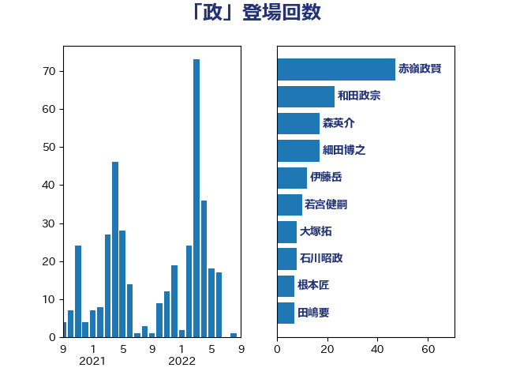

単語「政」

| 赤嶺政賢 | 日本共産党 | 47 回 |
| 和田政宗 | 自由民主党 | 23 回 |
| 森英介 | 自由民主党 | 17 回 |
| 細田博之 | 自由民主党 | 17 回 |
| 伊藤岳 | 日本共産党 | 12 回 |
| 若宮健嗣 | 自由民主党 | 10 回 |
| 大塚拓 | 自由民主党 | 8 回 |
| 石川昭政 | 自由民主党 | 8 回 |
| 根本匠 | 自由民主党 | 7 回 |
| 田嶋要 | 立憲民主党 | 7 回 |
| 高木毅 | 自由民主党 | 7 回 |
| 菅義偉 | 自由民主党 | 6 回 |
| 阿部知子 | 立憲民主党 | 6 回 |
| 古屋範子 | 公明党 | 5 回 |
| 青柳陽一郎 | 立憲民主党 | 5 回 |
| あべ俊子 | 自由民主党 | 4 回 |
| 山口俊一 | 自由民主党 | 4 回 |
| 山岸一生 | 立憲民主党 | 4 回 |
| 山本順三 | 自由民主党 | 4 回 |
| 山田宏 | 自由民主党 | 4 回 |
| 馬場成志 | 自由民主党 | 4 回 |
| 中西健治 | 自由民主党 | 3 回 |
| 加藤勝信 | 自由民主党 | 3 回 |
| 木原誠二 | 自由民主党 | 3 回 |
| 本村伸子 | 日本共産党 | 3 回 |
| 杉尾秀哉 | 立憲民主党 | 3 回 |
| 森屋宏 | 自由民主党 | 3 回 |
| 赤羽一嘉 | 公明党 | 3 回 |
| あかま二郎 | 自由民主党 | 2 回 |
| 上田清司 | 国民民主党 | 2 回 |
| 城井崇 | 立憲民主党 | 2 回 |
| 大野泰正 | 自由民主党 | 2 回 |
| 山岡達丸 | 立憲民主党 | 2 回 |
| 山東昭子 | 自由民主党 | 2 回 |
| 島尻安伊子 | 自由民主党 | 2 回 |
| 徳永エリ | 立憲民主党 | 2 回 |
| 斉藤鉄夫 | 公明党 | 2 回 |
| 松下新平 | 自由民主党 | 2 回 |
| 梶山弘志 | 自由民主党 | 2 回 |
| 河野太郎 | 自由民主党 | 2 回 |
| 浅田均 | 日本維新の会 | 2 回 |
| 浜田聡 | NHK党 | 2 回 |
| 海江田万里 | 立憲民主党 | 2 回 |
| 田村智子 | 日本共産党 | 2 回 |
| 磯崎仁彦 | 自由民主党 | 2 回 |
| 竹内譲 | 公明党 | 2 回 |
| 自見はなこ | 自由民主党 | 2 回 |
| 茂木敏充 | 自由民主党 | 2 回 |
| 薗浦健太郎 | 自由民主党 | 2 回 |
| 藤原崇 | 自由民主党 | 2 回 |
| 豊田俊郎 | 自由民主党 | 2 回 |
| 越智隆雄 | 自由民主党 | 2 回 |
| 野上浩太郎 | 自由民主党 | 2 回 |
| 青木一彦 | 自由民主党 | 2 回 |
| 三浦信祐 | 公明党 | 1 回 |
| 上月良祐 | 自由民主党 | 1 回 |
| 上野賢一郎 | 自由民主党 | 1 回 |
| 中根一幸 | 自由民主党 | 1 回 |
| 中野洋昌 | 公明党 | 1 回 |
| 井坂信彦 | 立憲民主党 | 1 回 |
| 伊藤忠彦 | 自由民主党 | 1 回 |
| 八木哲也 | 自由民主党 | 1 回 |
| 古川俊治 | 自由民主党 | 1 回 |
| 古川元久 | 国民民主党 | 1 回 |
| 古川禎久 | 自由民主党 | 1 回 |
| 城内実 | 自由民主党 | 1 回 |
| 大島敦 | 立憲民主党 | 1 回 |
| 宮本岳志 | 日本共産党 | 1 回 |
| 小西洋之 | 立憲民主党 | 1 回 |
| 山谷えり子 | 自由民主党 | 1 回 |
| 岩本剛人 | 自由民主党 | 1 回 |
| 岸田文雄 | 自由民主党 | 1 回 |
| 新垣邦男 | 立憲民主党 | 1 回 |
| 松沢成文 | 日本維新の会 | 1 回 |
| 林芳正 | 自由民主党 | 1 回 |
| 森まさこ | 自由民主党 | 1 回 |
| 泉健太 | 立憲民主党 | 1 回 |
| 浅川義治 | 日本維新の会 | 1 回 |
| 浜田靖一 | 自由民主党 | 1 回 |
| 渡辺博道 | 自由民主党 | 1 回 |
| 玉木雄一郎 | 国民民主党 | 1 回 |
| 田名部匡代 | 立憲民主党 | 1 回 |
| 田村貴昭 | 日本共産党 | 1 回 |
| 石田真敏 | 自由民主党 | 1 回 |
| 福山哲郎 | 立憲民主党 | 1 回 |
| 萩生田光一 | 自由民主党 | 1 回 |
| 西村康稔 | 自由民主党 | 1 回 |
| 西村智奈美 | 立憲民主党 | 1 回 |
| 野間健 | 立憲民主党 | 1 回 |
| 金田勝年 | 自由民主党 | 1 回 |
| 階猛 | 立憲民主党 | 1 回 |
| 高木かおり | 日本維新の会 | 1 回 |
| 麻生太郎 | 自由民主党 | 1 回 |